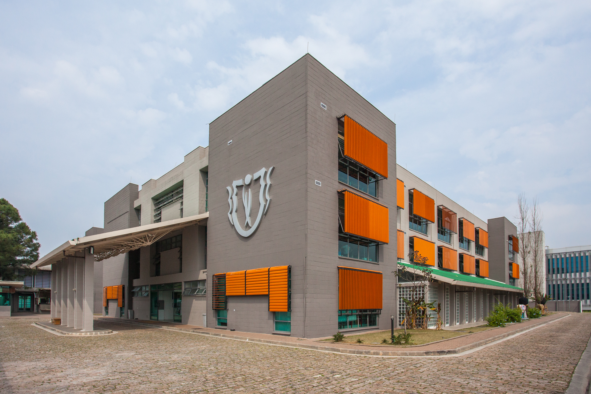
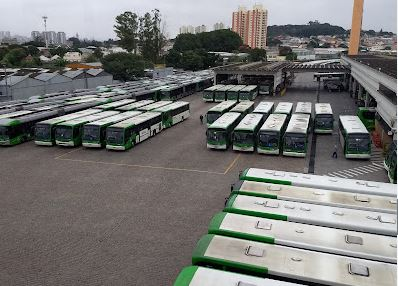
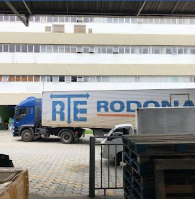
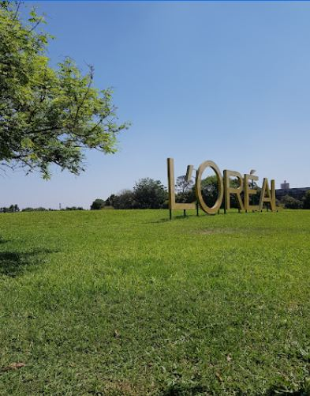
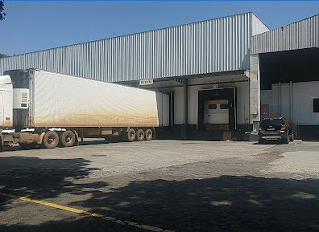
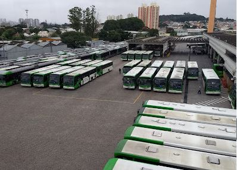
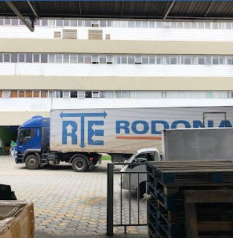
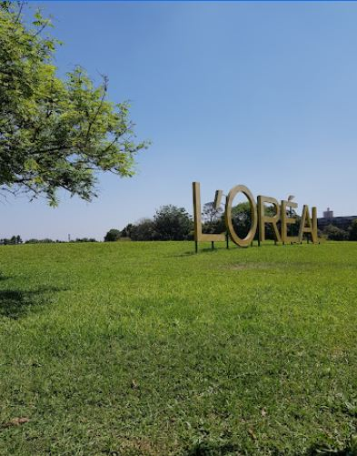
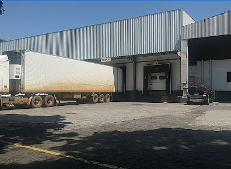

Campo Fluminense

Campo de Futebol aberto ao público
Área: 5,836.87 m² (Google Maps)
Campo de Futebol onde todo dia, e as vezes até de noite, jovens se reúnem para jogar. O campo tem um pequeno bar e arquibancada para os visitantes se acomodarem e poderem assistir.
Parque Vila dos Remédios

Parque Municipal Público
Área: 116,417.68 m² (Google Maps)
Parque municipal, não exatamente na Vila Jaguara, mas com a entrada dentro do bairro. Com uma extensão agrádavel e uma pequena trilha de caminhada, ele é um bom lugar para relaxar um pouco e descansar.
Colégio Germinare

Área: 5,917.08 m² (Google Maps)
O Colégio Instituto Germinare é uma escola de negócio técnica, com diversas matérias focando em gestão empresarial e para formar jovens tocadores de negócios, como Marketing, Tecnologia, etc.
O criador desse site estuda aqui! :)
Site oficial Instituto Germinare
DCs e Escritórios Administrativos

 







Natura S.A, JBS S.A, Transporte Brigida, Logística RTE, Loreal S.A e Distribuídora Quata, respectivamente.
A região da Vila Jaguara é muito atratativa para algumas grandes empresas por ficar perto da rodovia Marginal e, com isso, ter acesso para caminhões e outros meios de transportes muito usados por empresas e corporações em geral.
A existência de Centros de Distribuição e Escritórios Administrativos de grandes empresas, com certeza, é algo atrativo no bairro e uma das suas principais características.